📅 このページについて
ゲーム内の定期・季節イベント情報をまとめています。
外部作品とのコラボ情報は →コラボ情報ページ をご覧ください。
✅ このページで扱う内容
- 周年記念イベント
- 季節イベント(夏・冬など)
- 大会記念イベント
- ゲーム内ストーリーイベント
❌ コラボページで扱う内容
- アニメ・漫画コラボ
- 企業コラボ
- リアルイベント
- グッズ販売情報
📆 2025年イベントカレンダー
過去の傾向から予測される今後のイベントスケジュール
4、6月
- 🔮 新春イベント（予想）
- 🔮 夏季イベント（予想）
12月
- ✅ クリスマスイベント復刻
- ✅ クリスマスイベント
2026年2月
- ✅ 新春イベント「千灯が輝き 万家を照らす」
※予想は過去3年の開催パターンに基づいています。公式発表があり次第更新します。
🗂 過去のイベントアーカイブ
終了したイベントは半期ごとのアーカイブページに移動しました。
開催中・最新のイベント一覧
桂下の祈り
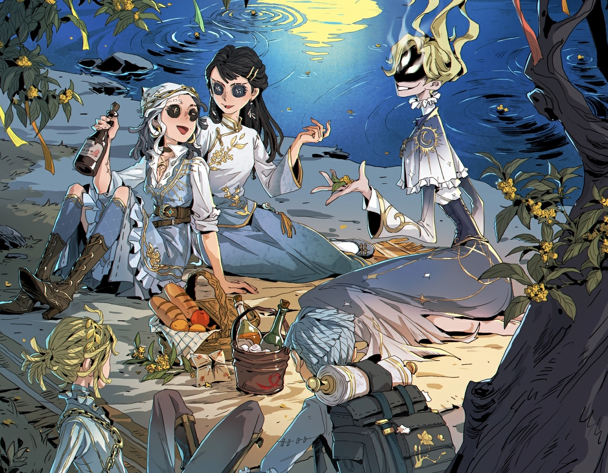
2026年9月24日メンテナンス後～2026年10月7日23時59分
イベント概要
中秋の月夜、桂花の街で賑やかな宴が始まる。懐かしいココットで遊んだり、中秋節の伝統的な民間ゲーム「博餅」を楽しみましょう！
主な獲得報酬：
- イベント居館音楽
- 中秋テーマアイコン枠
- 【SSR携帯品】時空の影-月盞
- 【SSR家具】木犀の風鈴
- 【SR衣装】骨董商-月枝
- 骨董商／バーメイドのSR特殊アクション、スタンプ、手掛かりパック など
ココット（デイリーログイン）
毎日「ココット」を1回体験すると当日のログインが完了。以下のボーナスを獲得できます。
- 動くアイコン自由選択
- スコープ×50
- 友情の手紙×20
- ホール音符×5
- 【アイコン枠】桂下の約束
ログイン補填：9月29日より開放。霊感×10を消費して未受取分を補填可能
ストーリー推進
桂花の街に戻り、懐かしいキャラたちと再会しながら月枝の心に寄り添います。
- 毎日ストーリーを読むと【木犀の便箋】×15を獲得
- 中秋節当日のストーリーを読んで桂花くじを引くと、対応キャラから祝福を受け取れます（くじの内容は10人それぞれ異なる）
- 獲得した桂花くじの祝福をシェアするとイベント限定の居館音楽を獲得
月下の博餅
中秋節に親しまれている伝統的な団らんゲーム。1回につき4人の参加者が必要で、友達招待またはマッチングで参加者を集めて開始します。全3ラウンド構成で、各ラウンド1人1回ずつ時計回りにサイコロを振り、出目に応じて階級が判定されます。
階級（高い順）：
状元 ＞ 満堂紅 ＞ 遍地錦 ＞ 黒六勃 ＞ 五紅 ＞ 五子登科 ＞ 四紅 ＞ 対堂 ＞ 三紅 ＞ 四進 ＞ 二挙 ＞ 一秀
キャラごとに異なるスキルがあり、サイコロの結果や獲得ポイントに影響します。対局開始前に3人のキャラスキルから1つを選択できます（おすすめキャラは1回まで更新可）。
【本卓の状元】：
- 参加者が「四紅」以上の階級を獲得すると【本卓の状元】に
- より高い階級が出た場合は称号が移動。同じ階級なら先に獲得した人が状元
- 状元になると【状元帽】【折桂帖】を獲得
- 【状元帽】は公共マップで着用・展示可能
- 【折桂帖】を他人にプレゼントすると【状元帽】と交換できます
博餅ポイントは累積され、200ポイント到達で【アイコン枠】を獲得できます。
イベントショップ
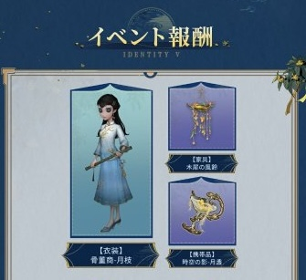
【木犀の便箋】の獲得方法：
- 毎日のストーリー体験完了 → ×15（合計75個まで）
- 対戦参加 → 結果に応じて獲得。最初の3日間は1日28個まで、それ以降は合計84個まで
- 博餅終了後、順位に応じて配布（1～4位で5／4／2／1個）。友達招待時は双方が追加で2個ずつ獲得
交換できる報酬：
- 【SSR携帯品】時空の影-月盞
- 【SSR家具】木犀の風鈴
- 【SR衣装】骨董商-月枝
- 骨董商／バーメイドの特殊アクション
- スタンプ
- 手掛かりパック など
「光と夢を追って」テーマイベント

2026年9月17日メンテナンス後～2026年10月7日23時59分
イベント概要
エウリュディケ運動会が開幕！3つの大学から集まった24名の選手と大会スタッフが登場します。トレーナーとなってオーダーメイドのトレーニング計画を立て、優勝の夢を後押ししましょう。
3名のスパーリングパートナー（記者-初穂、幸運児-緑陰、魔トカゲ-紫電）もトレーニングをサポートしてくれます。
主な獲得報酬：
- 【SSR家具】永遠の今
- 【SRペット】ホイッスル
- 【動くスタンプ】勝利の瞬間
- テーマSSR衣装（記者・幸運児・魔トカゲから1着無料）
- テーマSR衣装（全24着から5着無料）
- 【SR家具】表彰台、エモート、アイコン など
トレーニング計画（デイリーログイン）
毎日選手休憩室で当日の登録を完了するとログイン完了。連日ログインで順に獲得できます。
- 記憶秘宝・旧シーズン×10
- 手掛かり、楽章、ホール音符、欠片
- 動くスタンプ など
ログイン補填：9月24日0時より開放。霊感×10を消費して未受取分を補填可能
選手育成（ストーリー育成）
トレーナー視点で選手を1人選び、ターン制のストーリー育成を進めます。開始前にサポーターを1人選択し、【トレーニング】とサポーターの対応ステータスを合わせるとより多く成長します。
トレーニング日の行動（3択）：
- トレーニング：6種類のステータスから方針を選択（行動力を消費）
- 休憩：休憩イベント発生、行動力を大幅回復
- 外出：外出イベント発生、一部バフを獲得
休息日のラウンドでは対応アスリートの専用ストーリーが発生。育成結果（6種類のステータス）は各選手1回分のみ保持され、複数回育成した場合は上書きするか選択できます。
各選手でストーリー育成を1回完了 → 対応衣装の受け取り＋高速育成モード解放
大会スタッフの天賦育成
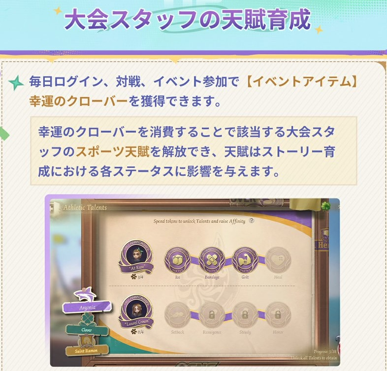
毎日ログイン・対戦・イベント参加で幸運のクローバーを獲得。獲得上限は毎日増加し、イベント期間中合計2800個まで獲得できます（全タスク繰り返し達成可）。
- クローバー消費で大会スタッフのスポーツ天賦を解放（ストーリー育成の各ステータスに影響）
- 最終天賦は第2週（9月24日メンテナンス後）に解放
- スタッフの全天賦解放 → そのキャラのカスタマイズ色替え可能なシリーズ衣装を受け取り可
- すべての天賦を解放 → 全キャラ共通【SRペット】ホイッスル
大会スタッフキャラ：庭師、納棺師、「少女」、医師、写真家、「囚人」、小説家
※衣装はイベント期間中に最大5着まで獲得可能。受取回数は選手キャラと共有
運動会種目ルール
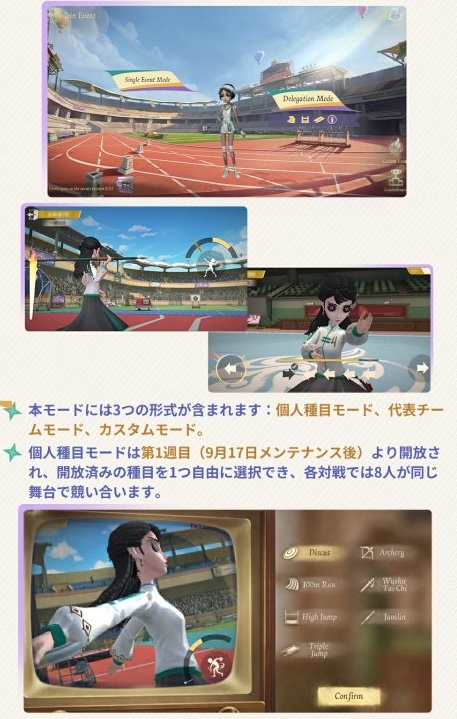
円盤投・アーチェリー・短距離走・武術太極・走り高跳び・槍投・三段跳びの計7種目。育成を1回完了した選手＆全天賦を解放した大会スタッフを出場に割り当てられます。
個人種目モード（第1週・9月17日メンテナンス後～）
- 開放済みの種目を1つ自由に選択、各対戦で8人が同じ舞台で競い合います
- 初日：円盤投、アーチェリー、短距離走
- 2日目0時：武術太極、走り高跳びを追加
- 3日目0時：槍投、三段跳びを追加（全種目開放）
出場制限：
- 「フールズ・ゴールド」→ 走り高跳びのみ
- 漁師 → 槍投のみ
- 「ビリヤードプレイヤー」→ アーチェリーのみ
- 「少女」と写真家はいずれの種目にも参加不可
代表チームモード（第2週・9月24日メンテナンス後～）
- 1試合に3〜5つの競技種目が含まれ、各種目に出場者を割り当てる必要があります
カスタムモード（第2週・9月24日メンテナンス後～）
- 最低2名の参加と、最低1つの種目選択が必要
- キャラ育成の参加条件なし。選手は【育成】不要、大会スタッフも天賦解放なしでそのまま使用可能
衣装カスタマイズ色替え機能
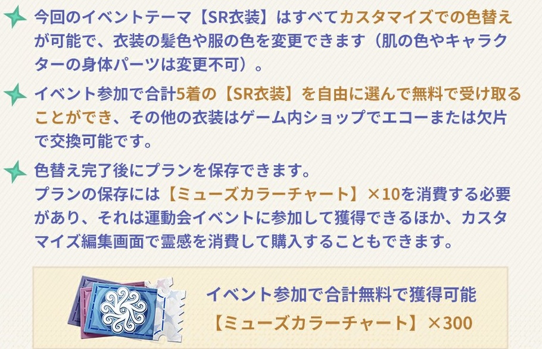
今回のイベントテーマ【SR衣装】はすべてカスタマイズでの色替えが可能。髪色や服の色を変更できます（肌の色やキャラの身体パーツは変更不可）。
- イベント参加で合計5着のSR衣装を無料で受け取り可能
- その他の衣装はゲーム内ショップでエコーまたは欠片で交換可能
- イベント参加で【ミューズカラーチャート】×300を無料で獲得できます
01 衣装カスタマイズ
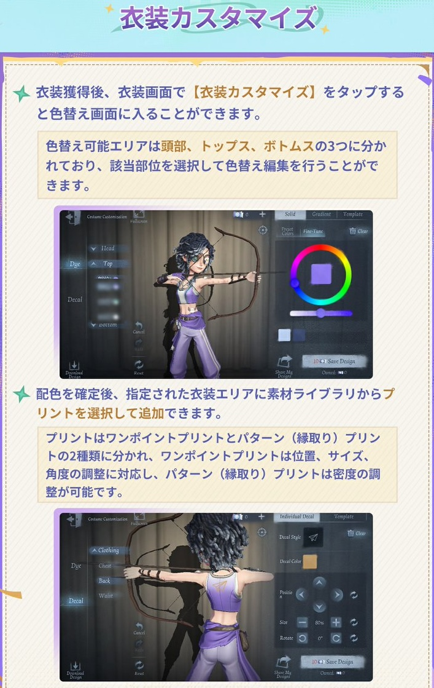
衣装獲得後、衣装画面で【衣装カスタマイズ】をタップすると色替え画面に入れます。色替え可能エリアは頭部・トップス・ボトムスの3つ。
配色を確定後、指定された衣装エリアに素材ライブラリからプリントを追加できます。
- ワンポイントプリント：位置・サイズ・角度の調整に対応
- パターン（縁取り）プリント：密度の調整が可能
02 プランの保存および共有
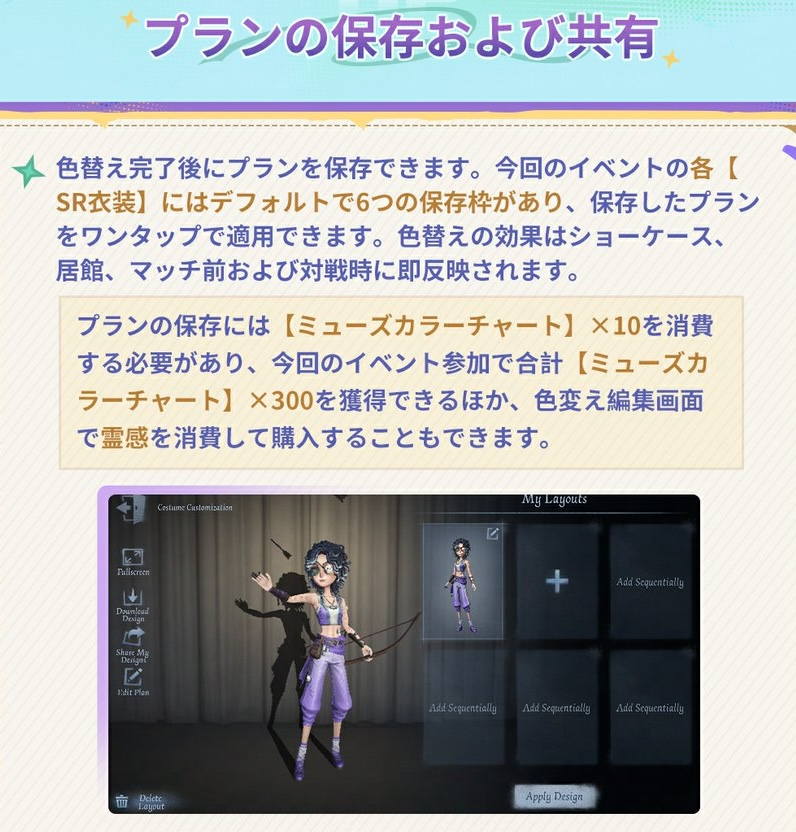
各【SR衣装】にはデフォルトで6つの保存枠があり、保存したプランをワンタップで適用できます。色替えの効果はショーケース・居館・マッチ前・対戦時に即反映されます。
プランの保存には【ミューズカラーチャート】×10を消費します。イベント参加で合計300個を獲得できるほか、色替え編集画面で霊感を消費して購入も可能です。
色替えプランはプランコードの共有にも対応。生成されたコードをコピー＆送信でき、受け取った側はコードを入力すると対象キャラへジャンプし、パラメータが自動入力されます。
イベントショップ
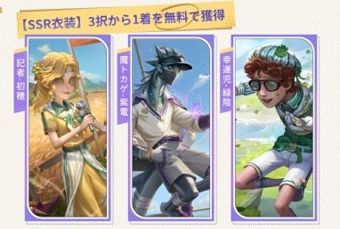
【リッシ】の獲得方法：
- ログインごとに×5、オンライン15分経過ごとに×1
- 対戦1回完了 or 「手記の加筆」真相解明価値30000到達で×5
- 「ペン先の空想」体験15分経過ごとに×3
- ストーリー育成1回×4（高速モードは×1）
- 運動会場モード参加：単種目×5、代表チーム×10
交換できる報酬：
- 【SSR衣装】記者-初穂、魔トカゲ-紫電、幸運児-緑陰（3択から1着無料）
- 【アイコン】初穂、紫電、緑陰
- 【SR家具】表彰台
- 【動くスタンプ】善戦健闘
- 【エモート】探鉱者-円盤、骨董商-太極剣、「騎士」-リレー
- 【エモート】玩具職人-ジャンプ運動、「フールズ・ゴールド」-走り高跳び練習
- 【エモート】漁師-槍、「ビリヤードプレイヤー」-アーチェリー
- ミューズカラーチャート（染色用） など
運動会テーマSSR衣装


- 【SSR衣装】記者-初穂
- 【SSR衣装】幸運児-緑陰
- 【SSR衣装】魔トカゲ-紫電
各1388エコーまたは4888欠片。初週はエコー価格15%オフで1178エコー。
※イベント参加で1着を無料交換可能。その他はエコーまたは欠片で購入できます
SR衣装（60エコー / 1088欠片）

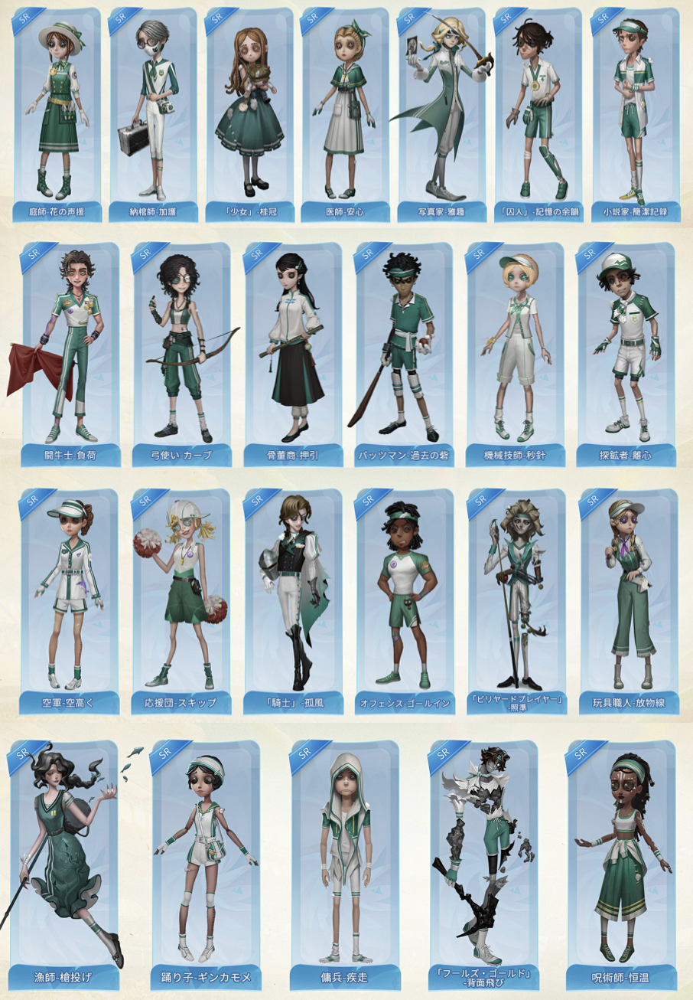
全24着からイベント参加で5着を無料選択・受取可能！その他はエコーまたは欠片で購入できます。
- 医師-安心、庭師-花の声援、傭兵-疾走、空軍-空高く
- 機械技師-秒針、踊り子-ギンカモメ、オフェンス-ゴールイン
- 写真家-雅趣、納棺師-加護、呪術師-恒温、探鉱者-離心
- 「囚人」-記憶の余韻、バッツマン-過去の砦、玩具職人-放物線
- 漁師-槍投げ、「少女」-桂冠、小説家-簡潔記録、骨董商-押引
- 応援団-スキップ、「フールズ・ゴールド」-背面飛び
- 「騎士」-孤風、弓使い-カーブ、「ビリヤードプレイヤー」-照準、闘牛士-負荷
販売期間：2026年9月17日メンテナンス後～10月14日23時59分
運動会テーマアイテム
- 【決勝の瞬間パック】→ 328エコー（【アイコン枠】決勝、スコープ×100、欠片×288入り）
- 【特殊アクション】サバイバー-勝利 → 67%オフ！通常388エコーが128エコー
販売期間：2026年9月17日メンテナンス後～10月7日23時59分
「パンダの守護者」イベント

2026年7月23日メンテナンス後～2026年8月19日23時59分
パズルイベント
7月23日メンテナンス後～8月5日23時59分パズルイベントを完了すると獲得：
- 【SR家具】パンダのぬいぐるみ展示棚
- 【アイコン】「VV」5歳！
- 【アイコン枠】「VV」とハイタッチ！ など
ラッキーダイス-パンダの守護者
7月23日メンテナンス後～8月19日23時59分期間限定で開放！今回のボーナスプール：
- 【アイコン】カラー集合写真
- 【アイコン】「VV」2歳！、「VV」3歳！、「VV」4歳！
- 【アイコン枠】レッサーパンダタワー
- 【アイコン枠】竹林のお遊び、竹林の隠れん坊
- 【落書き】モグモグ
- 体験カード
シーズン真髄特売パック
- 【シーズン真髄特売パック（S43・真髄2）】→ 【S43・真髄2】×10が含まれ、割引価格576エコーで3回まで購入可
販売期間：2026年7月23日メンテナンス後～9月10日メンテナンス前
パンダシリーズ新衣装
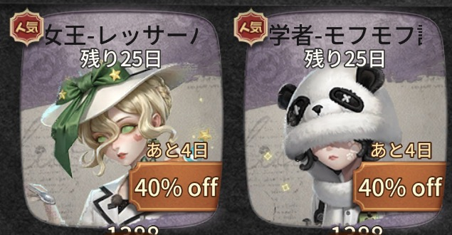
- 【SSR衣装】昆虫学者-モフモフ記念工房 → 1388エコー（初週40%オフで828エコー）
- 【SSR衣装】血の女王-レッサーパンダ祝福官 → 1388エコー（初週40%オフで828エコー）
パンダシリーズ再登場
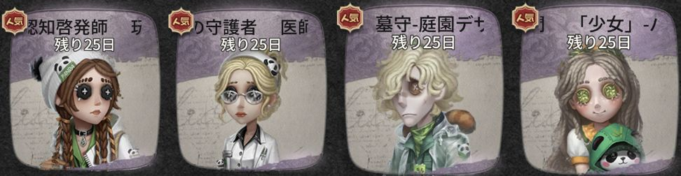
- 【SSR衣装】「少女」-パンダの仲間、医師-竹林の守護者、墓守-庭園デザイナー、玩具職人-認知啓発師 → 各1388エコー
- 【SSR家具】パンダのゆりかご → 1188エコー（5つまで）
- 【竹登り】パック → 328エコー（【アイコン枠】竹登り、100スコープ、288欠片入り）
イベントショップ

- 【SR携帯品】サバイバー-パンダのぬいぐるみ、【SRペット】パンダの赤ちゃん、【SR家具】パンダの飾り → 各80スコープで購入可能！
販売期間：2026年7月23日メンテナンス後～8月19日23時59分
シュティレヴァルトの舞踏会

2026年7月2日メンテナンス後～2026年7月29日23時59分
花間の伝言
毎日ログインに参加すると、以下のログインボーナスを獲得できます。
- イベントアイコン
- スコープ
- 欠片 など
ログイン補填：補填開放後、霊感を10消費してログイン補填を行うことができます。
補填期間：2026年7月10日0時～7月29日23時59分
宴に出席
空白の招待状に導かれ、Missトゥルースはシュティレヴァルトへ到着。水妖の伝説で知られるこの街で盛大な結婚式が挙げられるが、彼女が到着した時、式はすでに終わっており、そこで新たな事件が彼女を待ち受けていた。事件調査を行い、ストーリーを進めて調査進捗を累積すると：
- イベントSR衣装
- SR携帯品 など
林間のダンス
水妖となってダンスエリアから森を駆け抜け、町からできるだけ多くの旅人を舞踏会へ連れ戻す。連れ戻した旅人によって対応するポイントが異なり、累計ポイントが最も高いプレイヤーが勝利。
イベントモード参加で獲得：
- イベントSSR家具「誓いの石碑」
- SR衣装解放カード
- タグ など
ゲストへのお礼
毎週の指定タスクを完了すると、以下のボーナスを獲得できます。イベントタスクは2週間に分かれて順次開放。全てのイベントタスク完了でSSR衣装解放カードを獲得。
- SSR衣装解放カード
- 動く落書き
- ランクポイント保護カード など
炎昼の海声

2026年6月25日メンテナンス後～2026年7月15日23時59分
海観察日記
毎日ゲームにログインし、日記を描くとイベントへのログインを完了。
- 【アイコン枠】潮汐の声
- 【落書き】漁師-夏の涼味
- ホール音符、手掛かり など
ペラガヤ
毎日のストーリーを読み終えると「ホラ貝」×4を獲得（7日間で合計28個）。ストーリー内の選択によってキャラの好感度が変化し、異なる結末へ導かれます。好感度を上げるとより多くの背景ストーリーを解放できます。
対戦ドロップ
マルチ戦、ランク戦、混沌紛争、五人ランク戦、手記の加筆に参加すると「ホラ貝」を1日28個まで獲得（合計84個）。
深海の宝探し
キャラを1名選択して「深海の宝探し」に入り、潜水艇の鉤爪を操作して海底で宝を掴み取る。1回参加で「ホラ貝」×2獲得（1日4個まで、合計56個）。
「海の声」
「霧海の宝探し」公共マップで海洋生物を助けると【ホラ貝】×2獲得（合計28個）。
イベントショップ


「ホラ貝」で交換できます：
- 泣き虫SSR携帯品-ペラガヤの心
- 祭司SR衣装-メガネモチノウオ
- SR家具-海底の彫像
- 【特殊アクション】心眼-水中を漂う
- 【アイコン】夏の涼味、のどかな潮騒
- 【エモート】ばぁっ！
- サマースコープパック、手掛かりパック など
心眼-のびやかな夏パック

31%オフの割引価格でショップにて期間限定販売。
- 通常価格：3956エコー
- 割引価格：2688エコー
パック内容：
- 【UR衣装】心眼-のどかな潮騒 → 2888エコー/12888欠片でも購入可
- 【SSR携帯品】心眼-貝殻シュークリーム → 1068エコー/3888欠片でも購入可
販売期間：2026年6月25日メンテナンス後～7月22日23時59分
漁師-サマーレモンパック

31%オフの割引価格でショップにて期間限定販売。
- 通常価格：3956エコー
- 割引価格：2688エコー
パック内容：
- 【UR衣装】漁師-夏の涼味 → 2888エコー/12888欠片でも購入可
- 【SSR携帯品】漁師-レモンサングラス → 1068エコー/3888欠片でも購入可
販売期間：2026年6月25日メンテナンス後～7月22日23時59分
イベントテーマ家具

【UR家具】紺碧の海 → 通常2688エコー/11688手掛かり、イベント期間中55%オフで1208エコー（最大2個）
【SSR家具】
- 深海の秘宝 → 通常1188エコー/4188手掛かり、初週950エコー（最大6個）
- クラゲライト → 通常1188エコー/4188手掛かり、初週950エコー（最大6個）
【SR家具】
- 海模様の銀鏡 → 通常288エコー/1088手掛かり、初週230エコー（最大10個）
- 海模様の屏風 → 通常288エコー/1088手掛かり、初週230エコー（最大10個）
- 盛夏の芝生 → 通常288エコー/1088手掛かり、初週230エコー（最大10個）
家具パック販売
イベントテーマ家具SSRパック → 55%オフで1068エコー（エコーのみ、最大6個購入可）
- 深海の秘宝×1、クラゲライト×1が含まれます
イベントテーマ家具SRパック → 55%オフで388エコー（エコーのみ、最大10個購入可）
- 海模様の銀鏡×1、海模様の屏風×1、盛夏の芝生×1が含まれます
販売期間：2026年6月25日メンテナンス後～7月29日23時59分
「霧海の宝探し」期間限定公共マップ

期間限定水中公共マップ「霧海の宝探し」が開放！
- イベント期間：2026年6月25日メンテナンス後～2026年9月24日メンテナンス前
- 開放時間：24時間
- 花火ショー：2026年6月26日～7月12日、毎日19時～24時（1時間ごとに1回）
イベントボーナス：
- 【SSR家具】貝殻の椅子、サメの歯パニック
- 【落書き】海底の精霊
- 友情ポイント、欠片 など
モード説明
- ダイビング：深水エリアから三層に広がる海域を探索。浅瀬で資源を拾い、深海の財宝を探し、深淵の魚王に挑戦。酸素が尽きると所持品を失います。
- バブルガン採集・加工：バブルガンで魚・カニ・クラゲを捕獲。貝殻の鉱石は接近で採集。調理台・加工台で酸素ボンベや便利アイテムを製造。ウミガメ・マンタに乗ると移動速度向上＆酸素消費軽減。
- 特殊イベント：7月2日より発光魚群がランダム出現。7月9日からは三大魚王が順次登場。全員で力を合わせて討伐し、豪華な戦利品を獲得。
- サメの歯パニック：浅水エリアの複数人向けアトラクション。巨大サメ頭に挑戦。
- ビーチブラシ：砂浜に自由に文字を書けます。
- その他サプライズ：「焚火で語る秘密」ミニゲーム再登場。カスタマイズダンスに全ハンター新アクション追加。6月25日～7月12日は深海テーマのライトアップ開催。
みんなのコメント